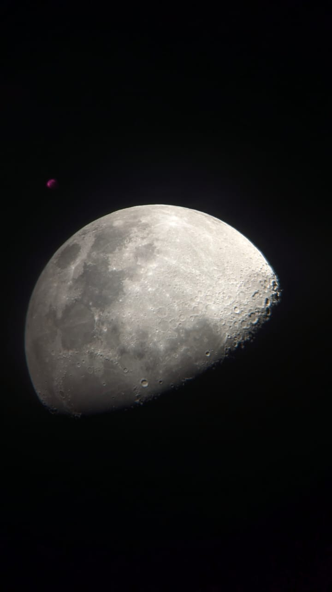
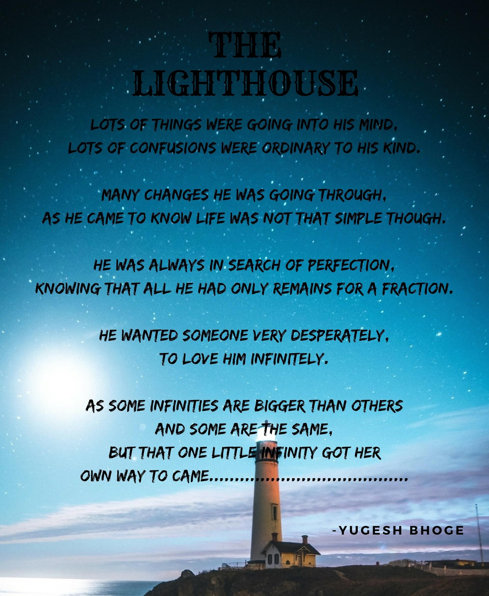
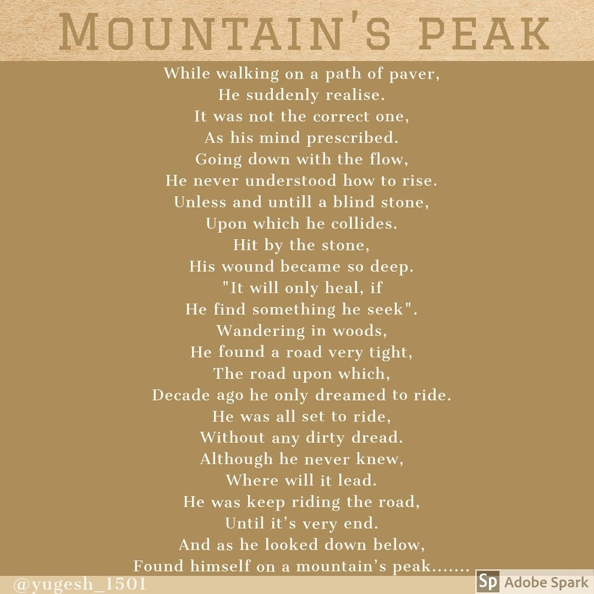
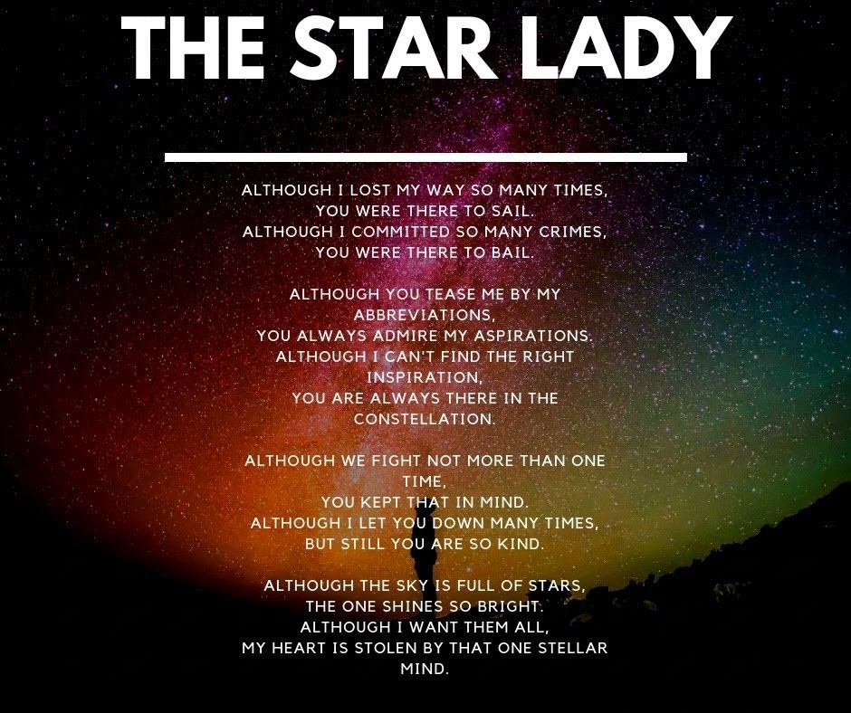

Astrophotography
Star Trails

Planetary Imaging
Poetry & Writing



Versions of Me
A poem in six pieces
A loan from the light
A poem in four pieces
Life & Outdoors

Mountain Trekking
Finding clarity at altitude.
Nature Photography